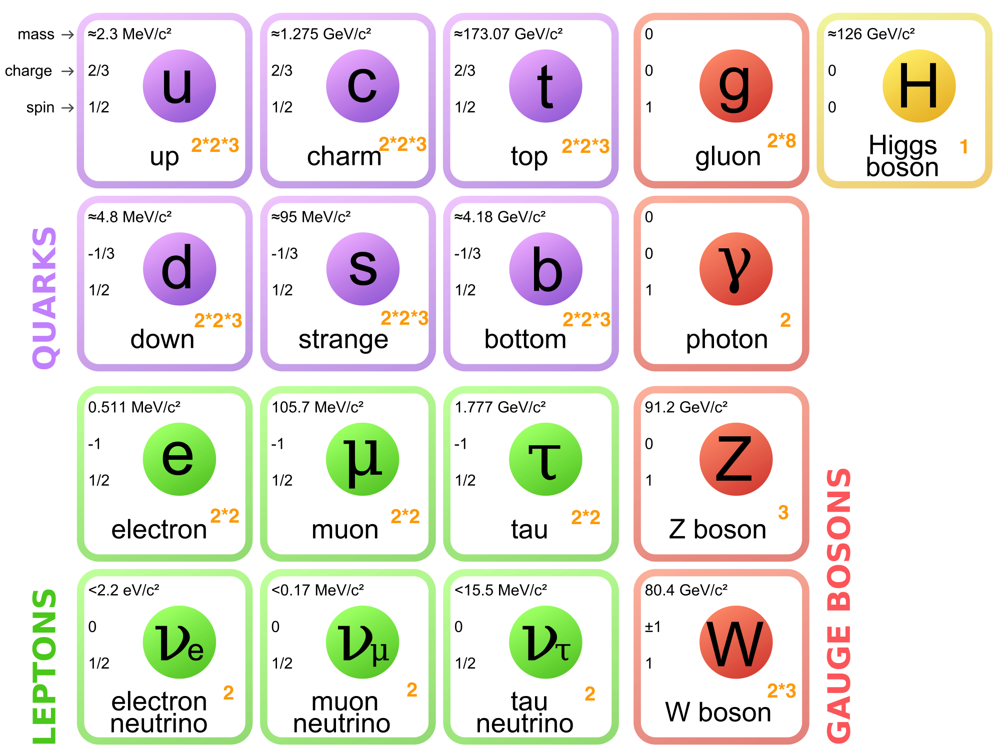

Thermal History of The Universe¶
Review of Standard Model for Particle Physics¶
- SM of particle physics
describes elementary particles and their interactions.
is well test with experiments.
Degree of Freedom of Elementary Particles¶
{kind=link}
IMG Source: https://en.wikipedia.org/wiki/File:Standard_Model_of_Elementary_Particles.svg
{kind=link}
The orange numbers at the right bottom of each particle is the degrees of freedom it has. Here are some comments.
Photons have only two DoF because it is mass 0. Same reason can apply to gluon. But according to symmetry, there are 8 kinds of gluons.
W bosons carry charges. This is where the 2 come from.
Electrons and quarks have antiparticles. So there DoF will be doubled after counting the spin.
Each quark have 3 different colors and this gives us the 3 when calculating there DoF.
Finally, we can make this table.
Partilces |
Higgs |
Messengers |
Quarks |
Leptons |
|---|---|---|---|---|
DoF |
1 |
27 |
72 |
18 |
Expansion and Temperature¶
We can see that the heaviest particle is top quark with a mass of \(m_t = 170 \mathrm{GeV}\).
Temperature Greater Than Mass of Top Quark¶
If temperature of the universe \(T \gg m_t\), all particles should be in relativistic regime and the decay (annihilation) and inverse decay (inverse annihilation) are in equilibrium so all particles contribute to the thermal quantities in a relativistic way.
Then
For convinience, define the following reduced Planck mass
And it’s good to know its value, which is \(2.4\times 10^{18} \mathrm{GeV}\).
We would like to know the relation between expansion and temperature. We already know that the energy density is
So the expansion is
So Hubble function is
Temperature Down to Mass of A Particle¶
As temperature drops down, particle dacay (annihilation) will be greater than its inverse which is suppressed by Boltzmann factor \(\exp (-m/T)\). The decay rate is so quick that the particle will almost dispear before the universe expand a lot.
So when the temperature drops below the mass of a particle, it won’t contribute to the energy density. Their DoF will just dispear.
For example, if \(T~\mathrm{MeV}\), Higgs and W and Z will decay and quarks are combined with gluons. So we only have photons, electrons, neutrinos as elementary particles, that is \(g_* = 10.75\).
The Hubble function,
Decay Rate VS Expansion Rate¶
We can generally prove that decay rate is much faster than the expansion rate. …………… To be added.